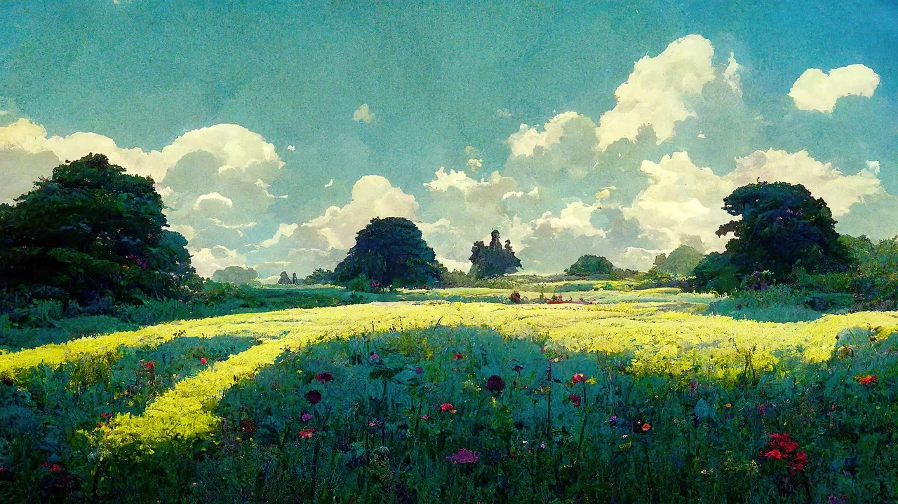
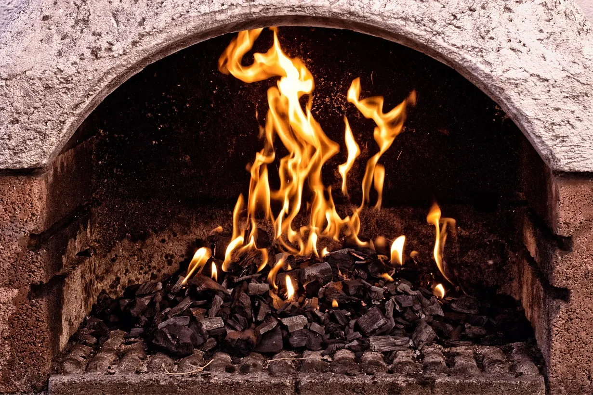
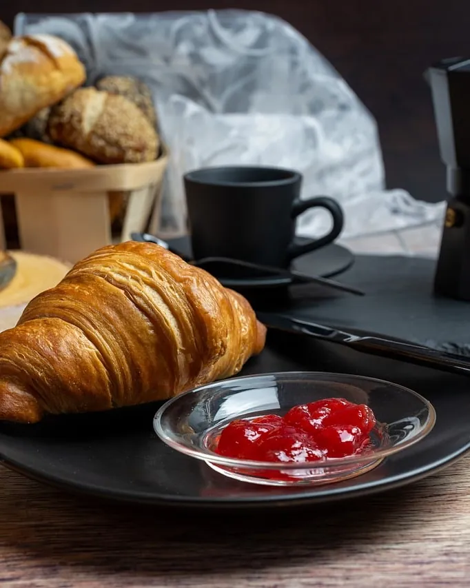
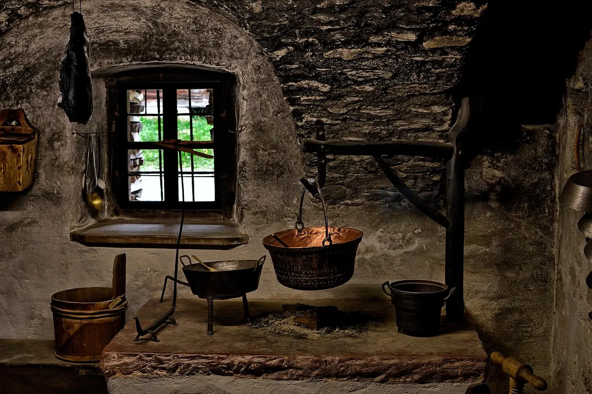
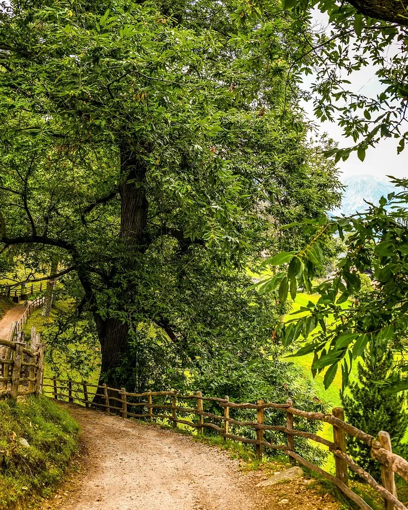

U Fucone,maison d'hôtes

Quatre chambres et une table au coin du feu, en Castagniccia, à une heure de Bastia.
Ce qui vous attend
Le fucone, c'est l'âtre de la maison corse : on y cuisait, on s'y chauffait, on y faisait sécher les châtaignes. Ici, il est allumé chaque soir d'octobre à mai.
Le petit-déjeuner
Pain de la veille grillé, confiture de châtaignes, brocciu et fruits du jardin. Compris dans le prix.
Le dîner au feu
Le soir, une seule table pour tous les hôtes. 35 € par personne, à réserver la veille.
La cheminée
Allumée à 18 h, d'octobre à mai. Le bois vient de la châtaigneraie derrière la maison.
Les balades
Les cartes sont prêtées, le pique-nique est préparé sur demande pour le lendemain.
L'eau d'Orezza
La source est à vingt minutes à pied. Une carafe vous attend dans la chambre.
Le linge
Draps, serviettes et peignoirs fournis. Arrivée après 16 h, départ avant 11 h.
Les quatre chambres
Chacune porte le nom de ce qu'on y voit en premier en ouvrant les yeux. Le petit-déjeuner est compris dans tous les prix.
Petit-déjeuner compris dans tous les prix
La table du soir
On dîne tous ensemble, devant le feu, ce que la saison et le voisin ont apporté. Prévenez-nous la veille d'une allergie ou d'un régime.

Ce soir, par exemple
Le menu change chaque jour.
- Pour commencerSoupe corse aux haricots et aux herbes du maquis
- PuisVeau aux olives, pulenda de farine de châtaigne
- Le fromageTomme de brebis du berger d'à côté
- Pour finirFiadone au brocciu et au citron
Le dîner, vin du domaine voisin compris35 €
Le matin, la table est mise près de la fenêtre à partir de 8 h. On prend son temps : le premier car pour Bastia ne passe qu'à 10 h.

L'histoire de la maison
Deux cents ans de feux allumés, avec une longue pause au milieu.

La claie est toujours là, au-dessus de l'âtre. En novembre, on y sèche encore quelques châtaignes : elles finissent en farine, dans le fiadone du dimanche.
- 1784
Un meunier bâtit la maison en pierre au-dessus de son moulin à châtaignes.
- 1890
Le fucone est agrandi : on y sèche les châtaignes sur la claie, tout l'hiver.
- 1961
La famille part à Bastia. Les volets restent fermés pendant soixante ans.
- 2019
Anna et Petru, les arrière-petits-enfants, rouvrent la maison et rallument le feu.
- Aujourd'hui
Quatre chambres, une table, et la claie de 1890 toujours au-dessus de l'âtre.

Autour de la maison
On part à pied depuis la porte. Les cartes sont dans l'entrée, la gourde aussi.
- La source d'Orezza40 min aller-retour
L'eau pétillante sort de la roche, on la boit à la fontaine.
- Le couvent en ruine1 h 30
Par le chemin muletier, sous les châtaigniers, jusqu'aux murs du couvent d'Orezza.
- Le moulin de la maison15 min
En descendant au ruisseau. La meule est toujours là, la roue aussi.
- Le Monte San Petrone5 h
Le sommet de la Castagniccia. Par temps clair, on voit la mer et l'île d'Elbe.
Choisir vos dates
Choisissez le mois et la chambre, touchez le jour d'arrivée puis celui du départ : la page de votre séjour s'écrit à côté. On vous répond dans la journée.
libredéjà prisFermé en janvier
Votre séjour
Touchez un jour libre dans le calendrier : c'est le jour où vous arrivez.
Petit-déjeuner compris—